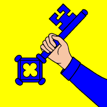
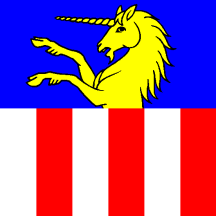
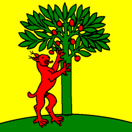

<div class="content">

  <div class="row">

    <div class="col-8">
      <h2 class="private-top-bar"> Federal Fabric Network Nodes</h2>
      <div class="bunddiv">

        <a class="sp" (click)="launchESPDashboard(8080)">
          
        </a>

        <a class="esp" (click)="launchESPDashboard(8070)">
          
        </a>

        <div class="bundblock">
          <a class="bund" (click)="launchDashboard(8000)">
            
          </a>
        </div>


      </div>

      <div class="cantons">
        <a class="zürich" (click)="launchDashboard(8010)">
          
        </a>

        <a class="zug" (click)="launchDashboard(8020)">
          
        </a>
      </div>

      <div class="municipalities">
        <a class="wallisellen" (click)="launchDashboard(8040)">
          
        </a>

        <a class="dübendorf" (click)="launchDashboard(8030)">
          
        </a>

        <a class="menzingen" (click)="launchDashboard(8050)">
          
        </a>

        <a class="risch" (click)="launchDashboard(8060)">
          
        </a>
      </div>
    </div>


    <div class="col-4">
      <h2 class="public-top-bar">Description</h2>
      <h5>The visuals on the left represent the Federal Fabric Network organizations.
        The government authorities are represented by their flags and are displayed in a rough tree structure as the authorities are organized in the federalist system.
        The confederation is the top authority,
        its subordinate cantons are in this example the canton of Zürich and the canton of Zug and the municipaliies are Wallisellen, Dübendorf, Menzingen and Risch.(from left to right)
        Wallisellen and Dübendorf are subordinates of Zürich and Menzingen and Risch are subordinates of Zug.
        <br><br>
        The external providers Swiss Post and the Artifact Manufacturer are placed in the top-left and top-right corner repsectively.
        Their placement does not imply any political importance. One can interact with the network by clicking on the images which opens the organizations dashboard offering an overview
        over private and public data and forms to trigger chaincode calls.
       </h5>
    </div>
 </div>

</div>
